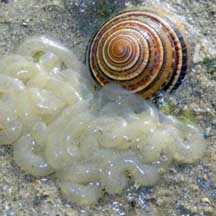
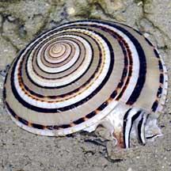

|
|
| shelled snails text index | photo index |
| Phylum Mollusca > Class Gastropoda |
| Sundial
snails Family Architectonicidae updated Sep 2020 Where seen? These beautiful snails are rarely seen on our shores. They are found in tropical to warm-temperate regions near their prey. Features: An unmistakable snail, the shell coils usually forming a flat disc-shaped with a flat base. This shape allows the snails to burrow through sand. The operculum is made of a horn-like material. Head with a short snout and a pair of long, tapering and very slender tentacles bearing eyes at their outer bases.The end of the the foot has two pointed lobes. The body is striped to match the shell. |
 Laying egg string. St. John's Island, May 09 Photo shared by Loh Kok Sheng on his blog. |
 St John's Island, Feb 13 |

| What do they eat? They feed on
sea anemones, corals and zoanthids. The mouth region is lined with
a tough cuticle as a protection against stings of their prey. Sundial babies: The snails are simultaneous hermaphrodites. Eggs are numerous, laid in capsules and embedded in a gelatinous mass anchored to the substrate, hatching as planktonic larvae. Pelagic larval stages often long, hence the snails have a very wide distribution. Human uses: They are occasionally collected by shrimp trawlers, consumed by fishermen and used as decorative items in the shellcraft industry. Status and threats: The Clear sundial snail is listed as 'Endangered' in the Red List of threatened animals of Singapore. The original shores where they were found have been lost to reclamation. |
| Some Sundial snails on Singapore shores |
 Clear sundial snail |
 Dead specimen. Partridge sundial snail |

| Family
Architectonicidae recorded for Singapore from Tan Siong Kiat and Henrietta P. M. Woo, 2010 Preliminary Checklist of The Molluscs of Singapore.. in red are those listed among the threatened animals of Singapore from Davison, G.W. H. and P. K. L. Ng and Ho Hua Chew, 2008. The Singapore Red Data Book: Threatened plants and animals of Singapore. Nature Society (Singapore). 285 pp. +from our observation
|
Links
References
|